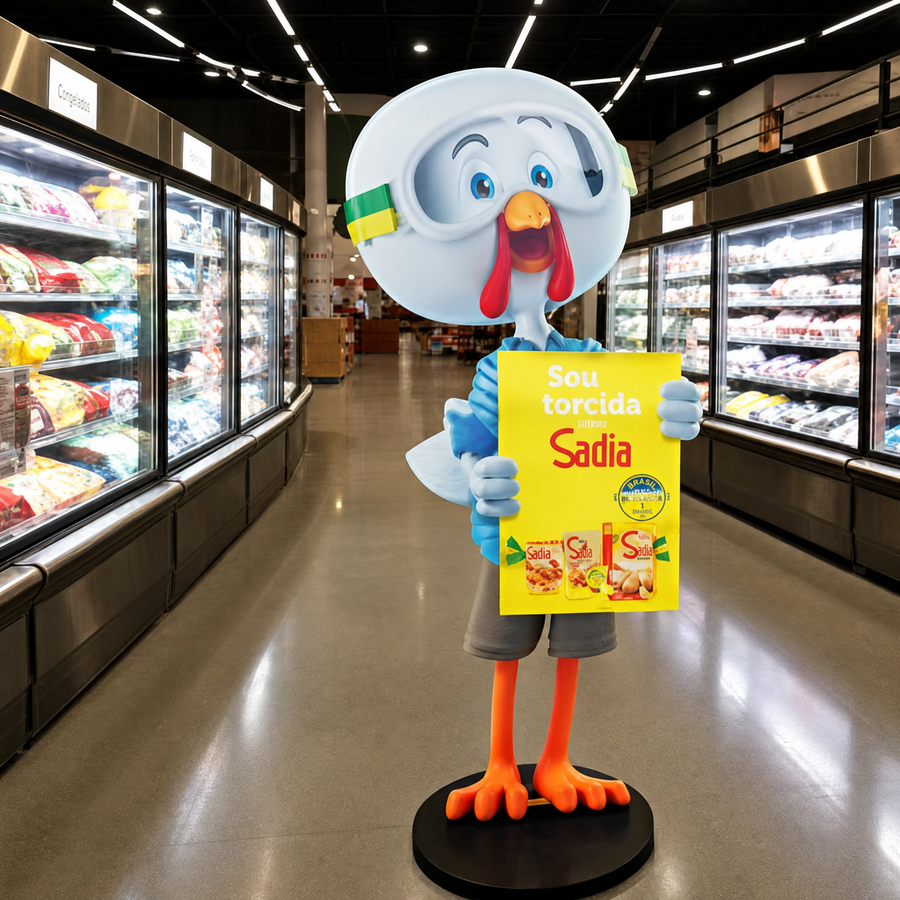
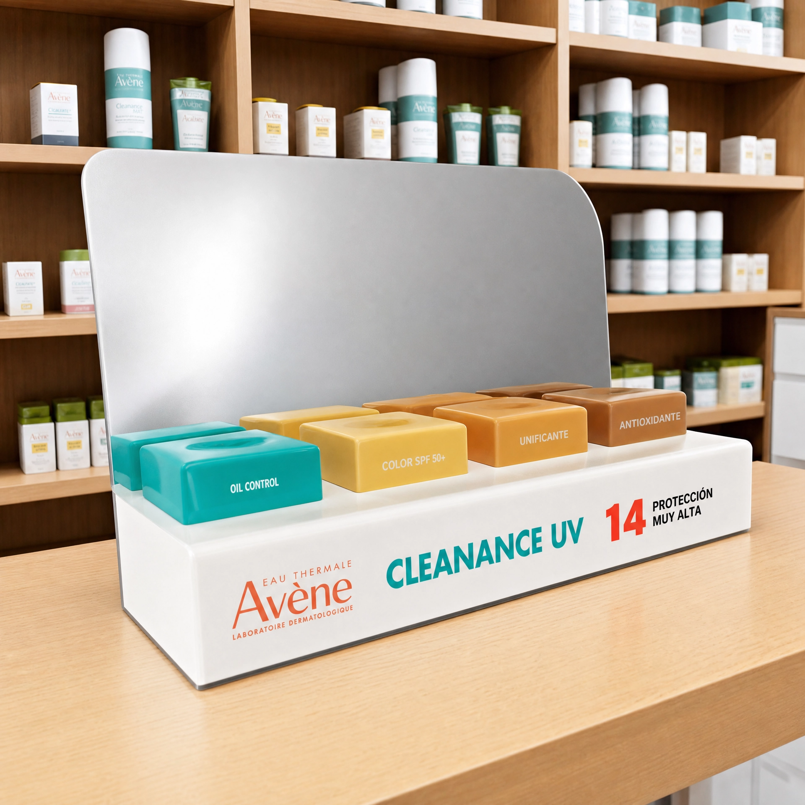

Expertises de mercado
O material comercial posiciona a Futuro como facilitadora no desenvolvimento de projetos, com verticalização que garante qualidade e prazos e processos produtivos 360°.

Apresentação comercial
A Futuro atua como parceira de produção para transformar briefing em material físico: adesivos, papelaria, displays, totens, caixas personalizadas e peças promocionais.

Comunicação visual completa
A apresentação comercial mostra a Futuro como apoio para empresas que precisam tirar campanhas do papel com consistência visual. A gráfica atende desde a ideia inicial até a escolha do substrato, prova, produção, acabamento, montagem e expedição.
O material comercial posiciona a Futuro como facilitadora no desenvolvimento de projetos, com verticalização que garante qualidade e prazos e processos produtivos 360°.
Se existe o material, a equipe imprime a ideia: MDF, acrílico, metal, papel, lona, vinil, substratos rígidos e aplicações para ponto de venda.

Atendimento nacional com acompanhamento da produção, controle de qualidade e entrega final para campanhas com múltiplos destinos.

